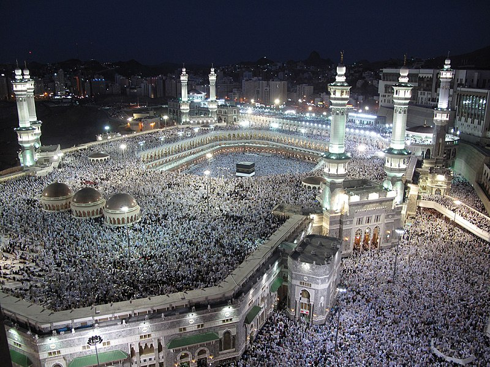
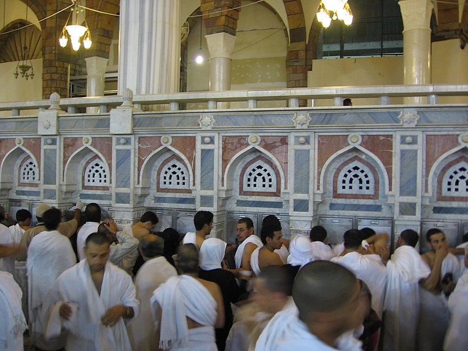
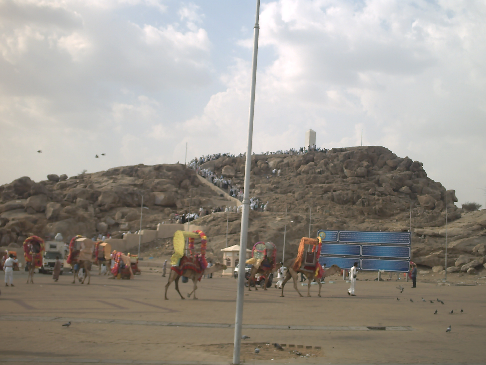

Visiter La Mecque est un acte d'une importance capitale pour chaque musulman, et ce pour plusieurs raisons profondément ancrées dans la foi islamique. Tout d'abord, La Mecque abrite la Kaaba, la Maison sacrée d'Allah, vers laquelle les musulmans du monde entier se tournent lors de leurs prières quotidiennes. La Kaaba est le point central de l'islam et représente l'unité de la communauté musulmane, incarnant la quintessence de la soumission et de la dévotion à Allah. En effectuant le pèlerinage à La Mecque, chaque musulman renouvelle son engagement envers sa foi, exprimant ainsi son obéissance totale à Allah. De plus, le Hajj, qui est l'un des cinq piliers de l'islam, est une expérience spirituelle profonde et transformatrice. En participant au Hajj, les croyants suivent les traces des prophètes Abraham et Muhammad, renforçant ainsi leur lien avec l'histoire et la tradition islamiques. Le pèlerinage à La Mecque offre également une occasion unique de se repentir, de rechercher le pardon divin et de se rapprocher de Dieu. C'est un moment de purification spirituelle et de renouveau, où les musulmans se libèrent de leurs péchés passés et aspirent à une vie meilleure et plus pieuse. En outre, le pèlerinage à La Mecque favorise l'unité et la fraternité entre les musulmans du monde entier, transcendant les barrières culturelles, linguistiques et ethniques. En partageant cette expérience sacrée avec des millions d'autres croyants, les pèlerins ressentent un sentiment profond d'appartenance à une communauté mondiale. Enfin, le fait de visiter La Mecque et de participer au Hajj est considéré comme une obligation religieuse pour tout musulman adulte et capable sur le plan physique et financier. C'est un devoir sacré que chaque croyant aspire à accomplir au moins une fois dans sa vie, dans l'espoir de mériter la récompense et la miséricorde d'Allah. En somme, visiter La Mecque et accomplir le Hajj revêt une signification spirituelle, sociale et religieuse immense pour chaque musulman, symbolisant l'aspiration à une vie de piété, de pureté et d'unité dans la foi.
Le lieux à visiter à la Mecque
- La Grande Mosquée (Masjid al-Haram) : Considérée comme la mosquée la plus sacrée de l'islam, la Grande Mosquée est un vaste complexe qui peut accueillir des millions de fidèles. Son élément le plus reconnaissable est la Kaaba, un édifice cubique enveloppé d'un drap noir brodé de versets coraniques en or. La Kaaba est le point focal vers lequel les musulmans du monde entier se tournent pendant leurs prières quotidiennes. Elle est entourée par plusieurs minarets et par la cour de la mosquée, qui peut accueillir des foules immenses pendant les prières et les célébrations du Hajj et de la Omra.
- La Kaaba : La Kaaba est un lieu sacré vénéré depuis des millénaires. Selon la tradition islamique, elle a été construite par Abraham et son fils Ismaël comme une maison pour l'adoration exclusive d'Allah. Les musulmans effectuent le tawaf, une procession rituelle en cercle autour de la Kaaba, pendant laquelle ils récitent des prières et expriment leur dévotion. Toucher ou embrasser la Pierre Noire incrustée dans un coin de la Kaaba est également un acte de grande piété.
- La colline de Safa et Marwa : Ces deux petites collines se trouvent à l'intérieur de la Grande Mosquée. Selon la tradition islamique, Agar, la femme d'Abraham, a couru entre ces collines à la recherche d'eau pour son fils Ismaël, jusqu'à ce que la source de Zamzam jaillisse miraculeusement pour étancher leur soif. En commémoration de cet événement, les pèlerins effectuent le sa'i, une course rituelle entre Safa et Marwa, pendant le Hajj et la Omra.
- La Source de Zamzam : Située à proximité de la Kaaba, la Source de Zamzam est une source d'eau sacrée vénérée par les musulmans. Selon la tradition islamique, elle a jailli miraculeusement pour répondre aux besoins d'Agar et d'Ismaël. Les pèlerins boivent de l'eau de Zamzam pour ses bénédictions spirituelles et certains en emportent chez eux comme souvenir et pour partager avec leur famille et leurs amis.
- La Montagne d'Arafat : Située à environ 20 kilomètres à l'est de La Mecque, la Montagne d'Arafat est un lieu crucial pendant le Hajj. C'est là que le prophète Muhammad a prononcé son dernier sermon lors de son pèlerinage d'adieu. Pendant le Hajj, les pèlerins se rendent à Arafat pour y passer une journée entière en prière et en méditation, suivant ainsi les pas du Prophète et cherchant le pardon et la miséricorde d'Allah. La Montagne d'Arafat est un symbole puissant de l'unité et de l'humilité des musulmans devant Dieu.




